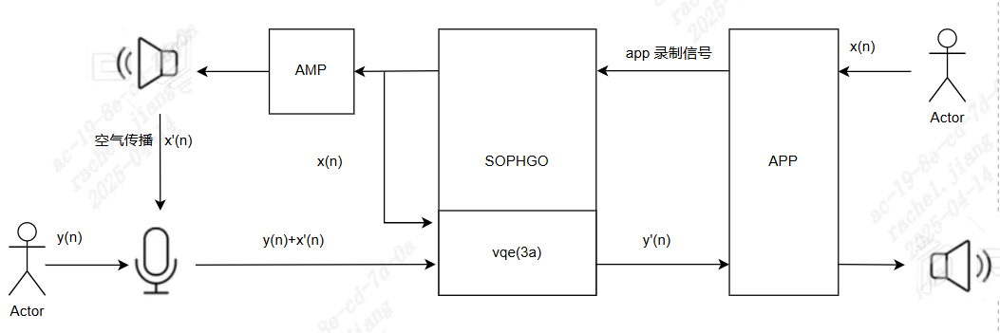

2. Introduction¶
2.1. Overview¶
[Purpose of Acoustic Echo Cancellation]:
{kind=link}

As shown in the figure, the remote app sends the voice recorded by the microphone, x(n), to Sophgo. Sophgo sends the data to VQE while playing it through the speaker.
The near-end microphone sends a mixture of the recorded voice y(n) and the speaker output x’(n) propagated through the air to Sophgo. x’(n) is the echo to be cancelled.
VQE input consists of the mixed x’(n) and y(n) signal plus the reference signal x(n). VQE outputs y(n) after echo cancellation and AGC/ANR processing.
The Audio Input content is the content of the ain_record.pcm file.
Note: Sophgo has two packages: QFN and BGA. In the QFN package, the x(n) reference signal is looped back inside the chip; in the BGA package, it is looped back outside the chip.
[Basic Algorithm Requirements]:
Recording Requirements
Only 8 kHz or 16 kHz sampling rates are supported, and playback and recording parameters must match.
AGC/ANR supports mono only; stereo is not supported.
AEC requires stereo recording (the left channel is near-end audio captured by the microphone and the right channel is audio sent from the far end).
The sampling bit depth is 16 bits (enBitwidth = AUDIO_BIT_WIDTH_16).
The captured left and right channels must not be distorted (for example, clipping caused by excessive waveform amplitude, poor microphone or speaker quality, or interference in the PCB analog circuit).
The near-end voice captured by the left-channel microphone must be louder than the speaker audio (far-end voice); otherwise, algorithm performance is affected.
The right-channel reference signal amplitude must be greater than the far-end voice in the left-channel microphone signal; otherwise, algorithm performance is affected.
A normal waveform (moderate amplitude on both the microphone and reference channels, with no distortion or background-noise interference):

The waveform below is not acceptable

- Adjustment Method:
Reduce the gain of the ADCR channel. A value of 1 is recommended for QFN; reduce it as needed for BGA.
If clipping remains after Step 1, reduce the Audio Output gain.
Note: The reference signal amplitude is affected by the remote side’s raw data amplitude, Audio Output gain, and ADC R gain.
Hardware Requirements
The board hardware has a microphone component.
The board hardware has a speaker for audio playback.
The board has an AEC loop: speaker audio is fed back to the recording right channel (ADC_R) without interference.
System Mechanical Requirements
The MIC should have a separate sealed acoustic chamber and an external shock-resistant rubber sleeve.
The MIC pickup direction should preferably be opposite to the speaker direction.
The speaker should have a separate acoustic chamber and rubber damping with good shock resistance.
The MIC and speaker should be as far apart as possible, with an angle that minimizes acoustic coupling.
[Ideal Debugging Environment Requirements]
Use the customer’s complete prototype, with the enclosure sealed as much as possible.
The microphone and speaker used must be installed in the customer’s complete prototype.
Tune the ADC/DAC gain levels to ensure stable mic in (capture) and ref in (playback loop).
First confirm that there is no pop noise, circuit noise, or signal interruption, then capture the correct speech pattern.